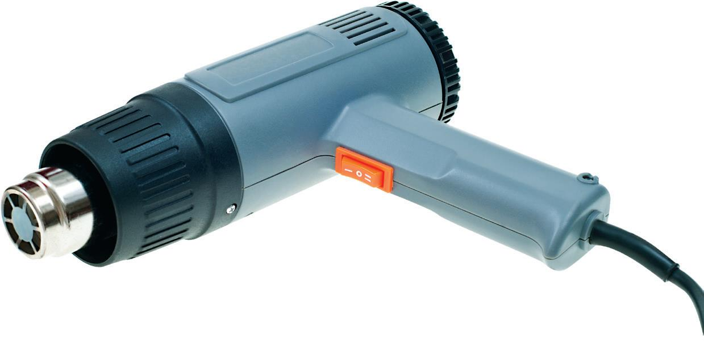
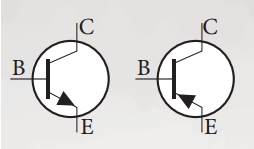

Kandungan ini mempunyai hak cipta kepada KPM (Buku Teks) dan Pencipta grafik,
Pengaturcaraan dan Nota dikecualikan.
(C) 2024 Reka Cipta
Bab 1: LUKISAN TERBANTU KOMPUTER (LTK)
Perisian Lukisan Terbantu Komputer
Tips: Just memorize the name
AutoCAD

Inventor
^^^ I'm not sure this have or not ^^^

Illustrator
Bab 2: BAHAN, PERALATAN DAN MESIN PEMBINAAN PRODUK
Bahan Logam
Logam Ferus
Mengandungi sejumlah karbon, mudah berkarat tetapi mempunyai kekuatan yang tinggi
Tips: Logam mengandungi besi
Logam Bukan Ferus
Tidak mengandungi karbon, tidak berkarat, dapat mengalirkan haba dan elektrik dengan baik
Tips: Logam tidak mengandungi besi
Antara bahan yang perlu diperhatikan
Aluminium

Plastik
Kayu

Gentian
Peralatan dan Mesin dalam Pembinaan Produk
Make sure you can write the name after observe the image
Gergaji jig elektrik (Electric jigsaw)
Pistol pemanas (Heat gun)
Pelelas mudah alih (Portable sander)
Mesin canai mudah alih (Portable grinder)
Make sure you can write the first and last prosedure after observe the image/name
- 1. Pastikan anda memakai pakaian keselamatan seperti pelindung mata dan telinga, apron, kasut keselamatan dan sebagainya.
- 2. Mata pencanai mestilah dalam keadaan baik.
- 3. Pastikan tempat kerja bersih dan jauhkan bahan mudah terbakar.
- 4. Pastikan percikan api yang terhasil tidak menghala ke bahan yang mudah terbakar atau rakan yang lain.
- 5. Jangan menekan mesin terlalu kuat pada bahan kerja kerana akan merosakkan mata pencanai.
- 6. Bersihkan mesin tersebut setelah selesai kerja.
Bab 3: SISTEM
Jenis Sistem Mekanikal
Jenis-jenis Gear
Gear taji
Gear heliks
Gear serong
Gear belitan
Gear rak dan pinan
The teacher said, search online which gear the steering wheel (方向盘) is using (Teacher said must search!)
ChatGPT:
Biasanya, stereng menggunakan gear jenis
"rack dan pinan"
.
Sistem ini menukar gerakan putaran
stereng kepada gerakan linear yang menggerakkan
roda-roda kenderaan.
Cikgu juga mengingatkan bahawa perlu memerhatikan ini [Hidraulik] (Kemungkinan tanya alternative dalam Bahagian B (c))
^^^ Hidraulik ^^^
Simbol Sistem Elektronik
Perintang (Resistor)
Perintang Tetap
Perintang Boleh Laras
Transistor

Pembaz (Buzzer)
Pembaz Piezo
Pembaz Elektromagnet
Bab 4: PEMBINAAN DAN PENGUJIAN MODEL BERFUNGSI DAN PROTOTAIP
Kaedah Pengujian
Ujian Makmal
Ujian makmal di dalam makmal atau bengkel dengan menggunakan peralatan dan kelengkapan yang tertentu bersesuaian dengan jenis projek
Ujian parameter
Ujian parameter ialah pengujian prototaip yang dibuat dalam suasana dan di tempat yang sebenar bagi menentukan kefungsian, kesesuaian, keupayaan serta kebolehgunaan sesuatu produk.
Bab 5: PENJENAMAAN PRODUK
Kategori Produk Pengguna

Logo
Logo haruslah:
- Ada Nama
- Ada Rupa (Biasanya lukis satu bulat)
- Ada Imej
- TIDAK BOLEH GUNA LEBIH DARIPADA 3 WARNA!!!
Bab 6: PEMASARAN PRODUK
Mengira Peratus margin keuntungan
Harga Jualan = Kos Pengeluaran + Margin Keuntungan
Contoh:
Brosur
Brosur perlu mengandungi
- Nama produk
- Gambar produk
- Harga
- Logo dan slogan
- Maklumat pengeluar
- Spesifikasi produk
- Penerangan produk
Tips: Brosur jangan lipat dalam peperiksaan & Jangan jawab secara melintang (不要打横)
Contoh dalam buku teks:
Contoh di atas hanya untuk kerja kursus sahaja, dalam peperiksaan buat mudah-mudah sahaja
Bab 7: HARTA INTELEK
Jenis Harta Intelek
Harta Industri
- Paten
- Reka bentuk industri
- Cap dagangan
- Petunjuk geografi
- Reka bentuk susun atur litar bersepadu
Bab 8: PENDOKUMENTASIAN
Tak pasti... Saya tak pasti cikgu cakap apa laporan...